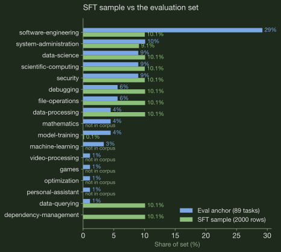

Data viewer


The held-out test set, straight from each task's task.toml. Click a row for the
instruction.
Tasks
| # | Task | Category | Difficulty | Expert min | Tags |
|---|
No tasks match.
Rows
| # | Category | Level | Turns | KChars | Source task | Task |
|---|
No rows match.